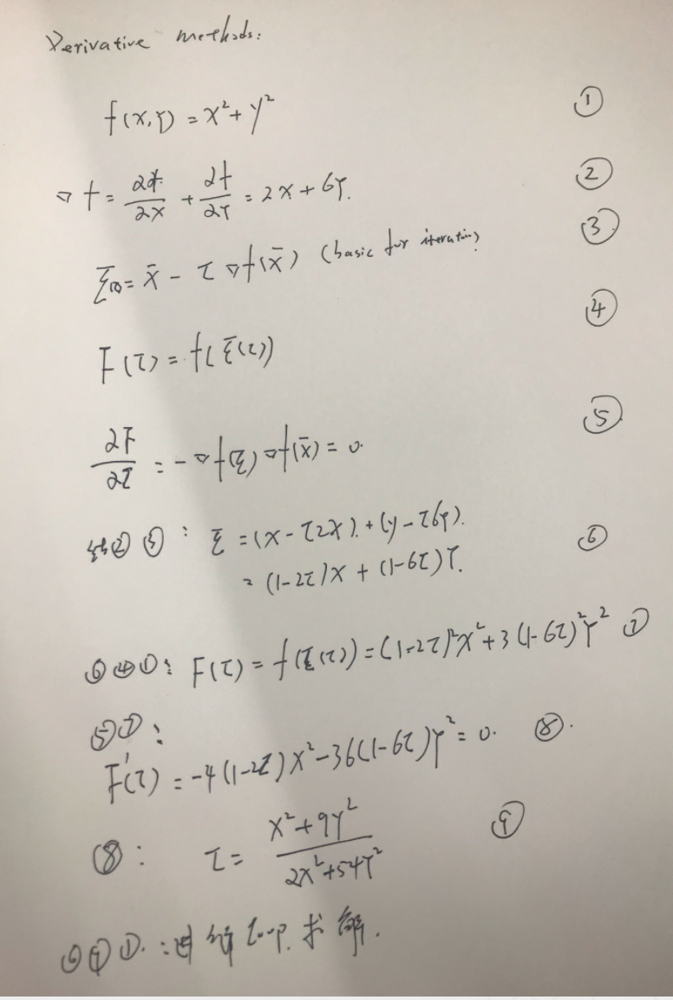
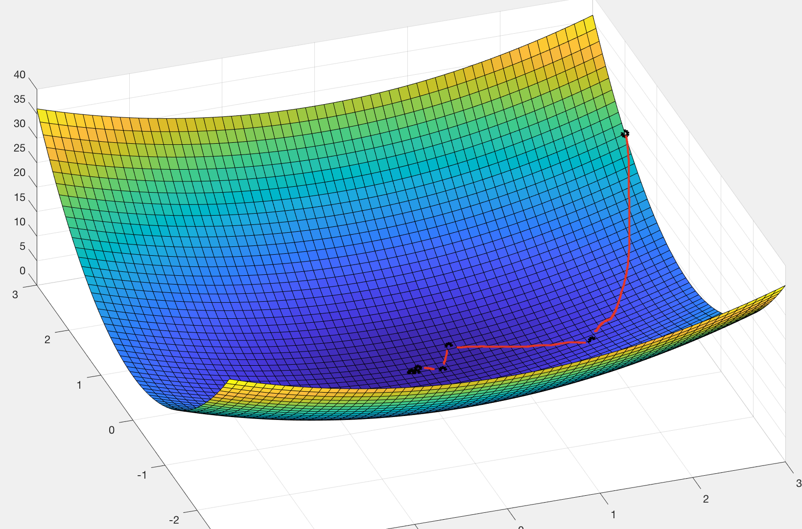
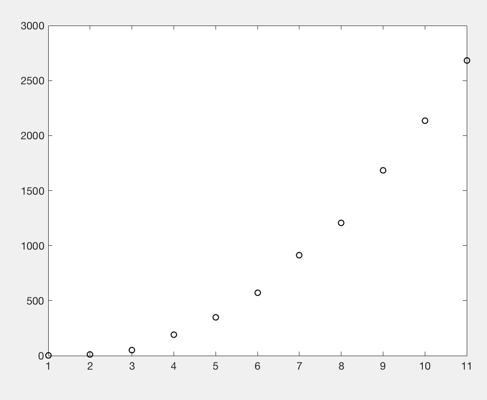
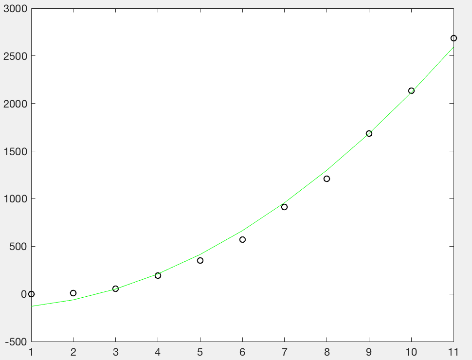

无约束优化–实践
假设满足如下方程
f(x,y) = x² + 3y²
需要求得改方程的最小值
使用梯度下降法进行求解

我们使用MATLAB 进行一个梯度下降求解
一些初始化代码
x=-3:0.1:3; y=-3:0.1:3; [X,Y]=meshgrid(x,y); fsurf=X.^2+3*Y.^2; surf(X,Y,fsurf),hold on; clear x; clear y; x(1) = 3; y(1) = 2; %guess f(1) = x(1)^2+3*y(1)^2; %init value plot3(x,y,f,'ko','Linewidth',[3])
|
然后根据我们上面推导的公式进行一个循环迭代
我们循环迭代1000 次 如果当我们发现 误差在我们的接受范围我们就可以停止 break
for j=1:1000 tau = (x(j)^2+9*y(j)^2) / (2*x(j)^2+54*y(j)^2); x(j+1) = (1-2*tau)*x(j); y(j+1) = (1-6*tau)*y(j); f(j+1) = x(j+1)^2+3*y(j+1)^2; plot3(x(j+1),y(j+1),f(j+1),'ko','Linewidth',[3]); pause(2); if abs(f(j+1)-f(j)) < 10^(-6) break; end end
|
最后的结果路径就为我们红色线那样step by step 走到一个合理区域

最小二乘法
与该方法类同有一个 最小二乘法 这里使用淘宝双十一 数据作为一个拟合
数据分别是 淘宝这几年 双11 的成交数据 单位都是 RMB 亿元
时间是从2009-2019 年这个时间
y = [0.5 9.36 52 191 350 571 912 1207 1682 2135 2684]
当我们把这些数据放在坐标轴上面观察的时候,直觉上的就觉得他是一个指数函数

所以我们的一个目标函数就是 ax^2+b ,a 为扩展系统,b 为一个截距在ax+b 中的b 一样的效果
最小二乘法 就是我们 loss = ∑ ( f(x) - y)² 求解他的最小值 其中 f(x)是 我们假定他的函数 y 为真是的函数的数值 (在上图中横坐标就是年份第一年.第二年,纵坐标就是成交和GMV,也即是我们y 值)
1: 我们定义个我们的目标函数
function E=datafitali(x0,x,y) A = x0(1); B = x0(2); E = sum( (A*x.^2+B-y).^2 ) 2:我们使用fminsarch 结果进行最优化 x = 1:11 y = [0.5 9.36 52 191 350 571 912 1207 1682 2135 2684] A = 1; B = 1; plot(x,y,'ko'),hold on coeff = fminsearch('datafitali',[A B],[],x,y); A1 = coeff(1) ; B1 = coeff(2); f2 = A1 * x.^2+B1 plot(x,f2,'g’);
|
基本上是符合一个指数增长的,这条曲线确实挺完美的 !
